Cross-cutting, cited not re-described. B1-01/B2-01 (no white top bar, no breadcrumb 'Findings >'/'Actions'; main starts at y=24 vs mock 44 at 1440): every pair. B1-04/B2-36 (rail Assets/Settings 'Not available yet'): every pair. B2-02 (page-local window controls): every pair has a Window line, From / to (included) date inputs, an 'Evidence cutoff (UTC)' datetime input and a Show button where the mock has the topbar 'Window: Event window 6 Oct 2026 - each site's event window'; at 390 the block is about 170 px. B1-07/B2-03 (14 px vs mock 11-12 px): in-panel state sentences 'No findings match.' + lens reason, 'Some sites have no selected result; totals are unknown.', 'No actions match.' and the 'First page' link are 14 px (pSizes 14px x1-2 on every empty, partial, pending and page-two pair); the .prose subtitle is 12 px and matches. B1-02/B2-04 (tall dark 390 header on short pages): refused pairs only, 288 px (findings) and 318 px (actions); every other 390 pair is 92-95 px. B1-53 (system vocabulary/IDs): every Finding row shows 'Finding 00000005' (finding_label = first 8 UUID chars, identical on all 4 rows because the fixture IDs share a prefix) and a disclosure with the full Finding and revision UUIDs plus 'Generated test data' / 'Source unverified'; Actions Source cell 'Finding 00000005'; Action title 'Action ACT-000001'. B2-21/B3-04 (UTC instead of site-local): 'Window ... (UTC days)', 'Evidence cutoff ... UTC' and the UTC cutoff input on every pair; on an estate page spanning sites the Architect must say whether UTC is the ruled estate basis (mock: 'each site's event window'). B3-01 does not recur (only the lens row). No console errors and no page horizontal overflow on any of the 62 pairs or the 20 link-check captures. Carried checks: '1 incidents' plural, raw 'c1 - EV_CONNECTOR' and the domainActionClient window-error copy do not occur on these screens (estate refusal copy is its own 'Choose a valid date range of at most 31 days.'). D3 rows R22/R23/R24/R37/R38/R60 do not touch these screens.
Cite the existing batch IDs; shared fix owner is the shell/typography seam. Window block: B2-02, or (a) extend the R88/R112 page-local Window ruling (D1) to the estate roots.
Register gap: the departure register has no row for any of the five estate screens, although W3-01 ruled many visible departures in its build spec (Run 13 rulings 2, 3, 5-8; q14-1; commit-3 r1 L1; W9; B9/S11/S26). Each of B10-02..B10-07 is a ruled-but-unregistered departure that the owner index cannot show.
Architect: add register rows (D1/D2) for each ruled W3-01 departure, citing the build-spec ruling, or reclassify as D3.
Summary cards: 'Open findings' -> 'Supported findings'; High priority and Low confidence show 'Not assessed' as the headline value (no number); Awaiting verification adds a 2-3 line sentence plus a 'How this is counted' disclosure. Findings card row 150 px at 1440 (mock about 112 px; W3-01 q14-1 waived the cap to 150 against its 146 mock cap) and 111 + 161 px at 390. Partial/pending: 'Coverage incomplete' in amber as the headline value of two cards. Actions cards match in count/titles (115 px); text headline values ('Not set', 'Not assessed') render about 16 px against the mock's 26 px 'Not set'.
(b) D1 for 'Not assessed' (no priority/confidence model) and D2 for 'Supported findings' wording (Run 13 r8); card height: cite q14-1 as the measured reason and register it. Headline font for text values: (c) D3 Low or D2 (Architect).
State filter chips: mock 'All states / Open / Recommendation'; app 'All states / Supported / Unconfirmed / No longer supported / Merged' on every lens (Run 13 ruling 2). At 390 the chip row scrolls horizontally (460 vs 358 px), cutting 'No longer suppor...' with a visible scrollbar; the mock fits on one line.
Vocabulary: (b) D2 (the W1 lifecycle model has no Open/Recommendation state) - register it. 390 chip scroll: (c) D3 Low (wrap the chip row) or D2 if the scroll is ruled.
B10-04
findings
Finding destinations by domain: only the mini-grid (KOBO-001) title is a link; the cold (2 rows) and EV (1 row) titles are inert and the notice says 'other titles are shown without a link' (Run 13 ruling 3). The wire carries links.finding for every row, and the link-check captures show /sites/COLD-LAB-001/findings/...016d?revision_id=...016e and /sites/EV-LAB-001/findings/...03ce?revision_id=...03cf render the same Finding title and bounded conclusion (part-links l06, l07). When the KOBO row is withheld (pending, partial, page two) the page has no Finding link at all and the notice reads 'Finding titles on this page are shown without a link'. Mock: every title is a link.
(b) D1 if the Architect keeps ruling 3 (no reviewed route pins the exact cold/EV revision) - register it with the resolving unit; or (c) D3 Medium if the cold/EV Finding frames are proven to honour revision_id (the captures show them rendering the right Finding).
Rows: Priority and Confidence are plain 'Not assessed' text (mock: High/Medium/Low chips with info marks); State chip 'Supported' (mock 'Open'/'Recommendation'); Main consequence 'No consequence recorded' and Lens 'No supported lens' on all 4 rows. The wire has consequence.state UNPRICED with source_revision_id null, which the UI maps to 'No consequence recorded' by ruling (Run 8 r3-4, Run 13 r5), including the EV Finding whose Site ran the W2-07 tariff and EV consequence worker (consequence revision ...03d2 in the producer log). Site cell 'COLD-LAB-001' link over 'Cold replay lab' (mock: name only); the Actions Site cell is the reverse (name link over code), so the two estate tables order Site differently.
Priority/confidence/lens: (b) D1 (no model or proven lens predicate). Consequence: Architect to check whether the EV consequence revision should join the estate row (if yes (c) D3 Medium, else D1 with reason). Site cell order: (b) D2 Low (Run 13 r8 vs r1 L1) or (c) D3 Low for consistency.
All three lenses are empty in every producer state: Cost 'No supported priced consequence in this selection.', Risks 'No supported risk classification in this selection.', Opportunities 'No supported opportunity Finding in this selection.' (mock: 1/4/1 rows); the panel keeps its title with no table header. The cold and EV Site Findings lists (link-check l08/l09) still show 'Cost / Risks / Opportunities - Not available yet' although these estate lens routes exist (B3-13 recurs on cold and EV).
Empty lenses: honest, (b) D1 (no lens predicate / opportunity producer; W3-01 allows Opportunities empty until W4-03) - register. Cite B3-13 for the Site lens chips. The producer cannot yield a populated lens, so populated-lens layout is unverified.
B10-07
actions
Actions row: title 'Action ACT-000001' (mock 'ACT-048 - Review generator stop setting'), Owner 'Not set', Success criterion 'No success criterion recorded', Source 'Finding 00000005'. The Action's own page (link-check l04) titles the same Action 'ACT-000001 - Battery reserve trial' with Intervention 'Battery reserve 20% to 15%', so the estate list and the Action page name it differently. Lifecycle line 'Pending -> Applied -> Verification window -> Verified or withdrawn' vs mock 'Lifecycle: Open -> In progress -> Completed -> Verification window -> Verified, Ineffective or Inconclusive' (ruled, B9/S11/S26). Notice copy differs and has no info icon. Only the mini-grid Action exists in this producer; cold/EV Actions are excluded from the global list by R02/R04.
Title: (c) D3 Low - use the same label as the Action page (W9 ruled no stored title, but the Action page derives one), or register as D1. Lifecycle line and notice: (b) D2 - register. Cold/EV exclusion: (a) R02/R04 (D1, planned), not observable here.
Pending copy: with KOBO-001 PENDING_RECOMPUTE (it still has selection ...0584), the panel says 'Some sites have no selected result; totals are unknown.' and the notice says 'New evidence is being assessed. Some sites are not yet assessed; estate totals are unknown.' The first sentence and the notice's second half are false for that Site: it has a selected result and was assessed; only new evidence is pending. Its row is withheld with no marker naming KOBO-001.
(c) D3 Low: choose the partial copy by coverage cause (pending vs missing selection) and name the affected Site.
B10-09
findings
Clipped material text at 390: the KOBO title link 'Generator support merits review: bounded candidate avoidable running' is clamped to two lines with an ellipsis (scrollHeight 53 vs clientHeight 35). The sticky Finding column is wide enough that only Finding and Site are visible before table scroll (mock shows Finding, Site, Priority and part of Confidence).
(c) D3 Low: no clamp on a Finding title (or a reviewed clamp with the full title available).
Bare route (rail entry): the default window is the 7 days before the browser date (2026-10-17..10-23 here) while the read cutoff is the producer's pinned 2026-11-02, so the rail lands on 'Coverage incomplete' / 'Some sites are not yet assessed' (Findings) and 'No actions match.' (Actions). The skew is a producer-clock artefact; the honest partial state is correct. The mock lands on the event window with data.
Link check (not counted as pairs, part-links): Site links /sites/COLD-LAB-001, /sites/EV-LAB-001 and /sites/KOBO-001 land on each Site's Overview; the KOBO Finding and Action links land on the right Finding (revision ...058c, and the Action's source revision ...04be) and Action. The EV and KOBO Overviews read 'Not shown: this Overview is awaiting evidence migration' (batch 2/9 territory). B7-01/B9-10 recur: /sites/COLD-LAB-001/findings and /sites/EV-LAB-001/findings show the mini-grid 'No Performance comparison report exists for this Site' index. No estate row links to those lists. Environment note: on the first run every KOBO link showed 'Site unavailable' because /api/sites returned 503 'var/sites/kobo-001.yaml has changed since Site KOBO-001 was imported' (an ignored worktree file dated Oct 23); it was moved aside for the capture and restored after.
Cite B7-01/B9-10 (High, D3, W2 fix slice). No new estate finding. The whole-list 503 for one stale user document is designed behaviour (sites_api.py).
/actions?from=2026-10-01T00:00:00Z&to=2026-11-03T00:00:00Z refused window: refusal alert, no panel (honest refusal; header B1-02/B2-04 at 390) Findings: B10-X1, B10-01, B10-02, B10-07
App: Mock: Managed actions
AppMock
actions · refused-33d · 390
/actions?from=2026-10-01T00:00:00Z&to=2026-11-03T00:00:00Z refused window: refusal alert, no panel (honest refusal; header B1-02/B2-04 at 390) Findings: B10-X1, B10-01, B10-02, B10-07
App: Mock: Managed actions
AppMock
Link check (not counted): estate row destinations and cold/EV Site Findings lists
link-check · l00 · 1440x1000
http://127.0.0.1:5180/sites/COLD-LAB-001 · B10-11 link check
App
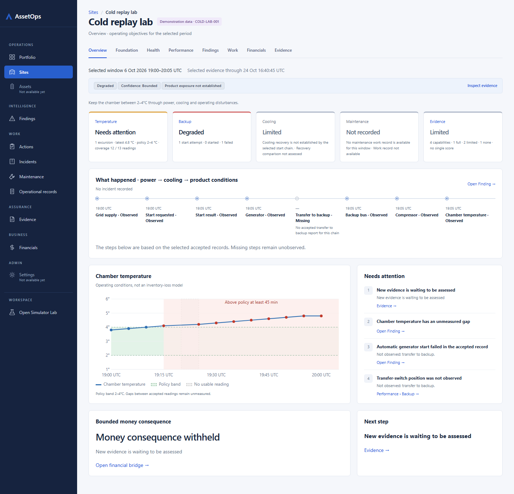
Mock
link-check · l00 · 390x900
http://127.0.0.1:5180/sites/COLD-LAB-001 · B10-11 link check
App
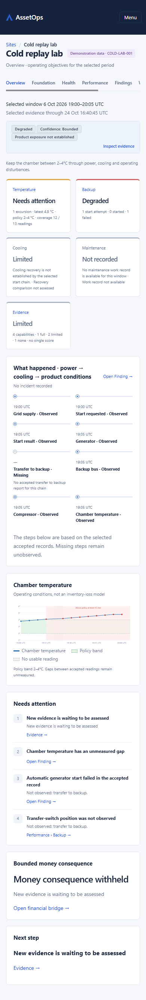
Mock
link-check · l01 · 1440x1000
http://127.0.0.1:5180/sites/EV-LAB-001 · B10-11 link check
AppMock
link-check · l01 · 390x900
http://127.0.0.1:5180/sites/EV-LAB-001 · B10-11 link check
App
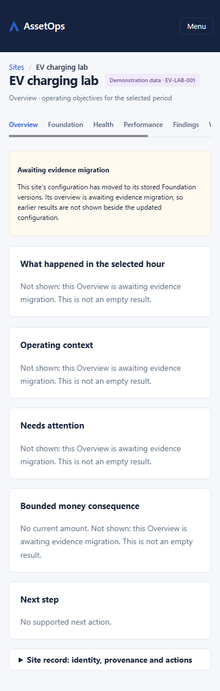
Mock
link-check · l02 · 1440x1000
http://127.0.0.1:5180/sites/KOBO-001 · B10-11 link check
App
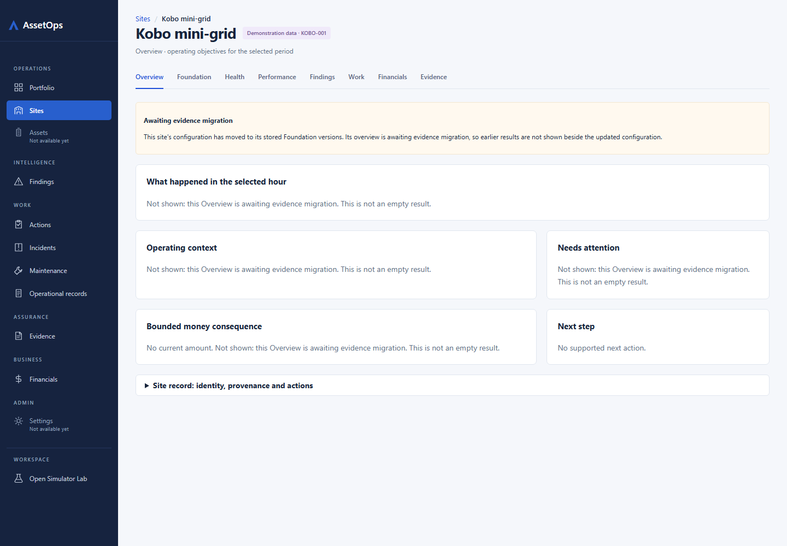
Mock
link-check · l02 · 390x900
http://127.0.0.1:5180/sites/KOBO-001 · B10-11 link check
App
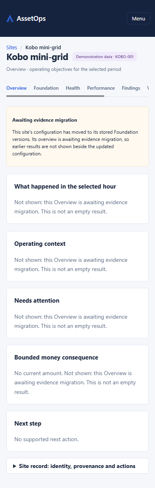
Mock
link-check · l03 · 1440x1000
http://127.0.0.1:5180/sites/KOBO-001/findings/00000005-0000-4000-8000-0000000004bd?revision_id=00000005-0000-4000-8000-00000000058c · B10-11 link check
App
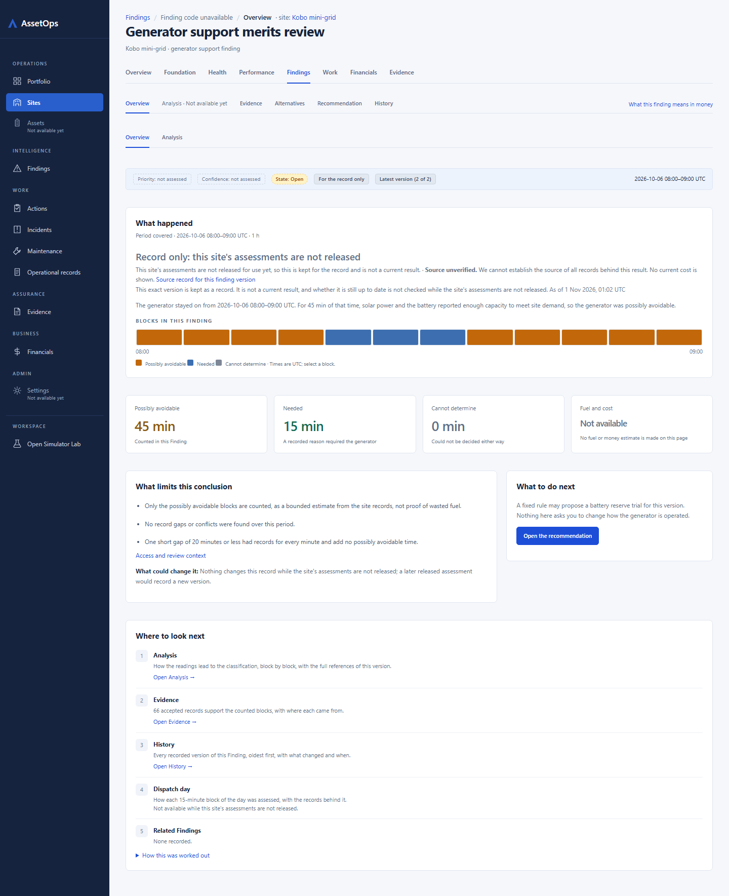
Mock
link-check · l03 · 390x900
http://127.0.0.1:5180/sites/KOBO-001/findings/00000005-0000-4000-8000-0000000004bd?revision_id=00000005-0000-4000-8000-00000000058c · B10-11 link check
App
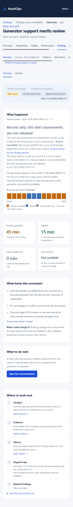
Mock
link-check · l04 · 1440x1000
http://127.0.0.1:5180/sites/KOBO-001/actions/00000005-0000-4000-8000-000000000561?event_id=00000005-0000-4000-8000-00000000057f · B10-11 link check
App
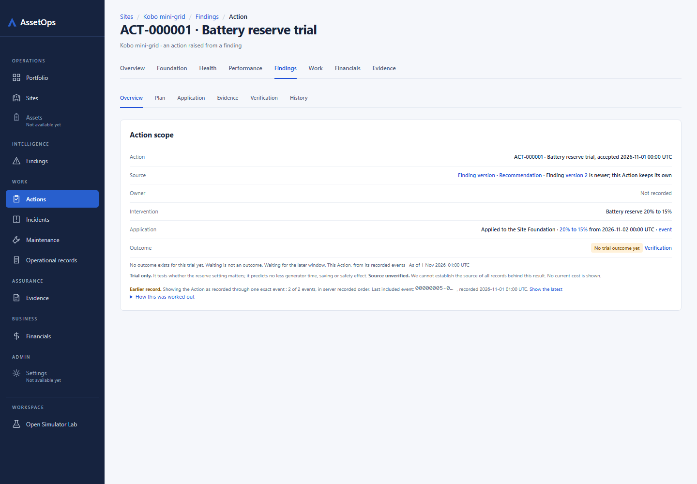
Mock
link-check · l04 · 390x900
http://127.0.0.1:5180/sites/KOBO-001/actions/00000005-0000-4000-8000-000000000561?event_id=00000005-0000-4000-8000-00000000057f · B10-11 link check
App
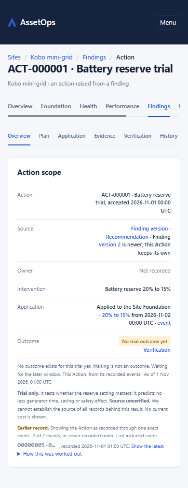
Mock
link-check · l05 · 1440x1000
http://127.0.0.1:5180/sites/KOBO-001/findings/00000005-0000-4000-8000-0000000004bd?revision_id=00000005-0000-4000-8000-0000000004be · B10-11 link check
App
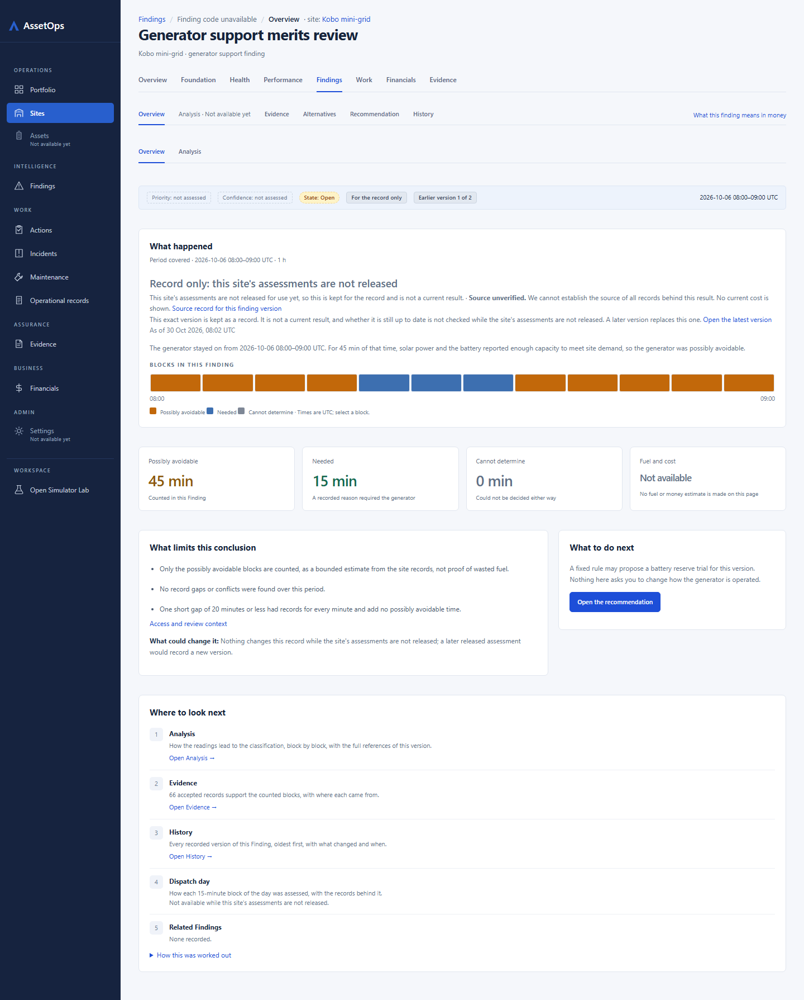
Mock
link-check · l05 · 390x900
http://127.0.0.1:5180/sites/KOBO-001/findings/00000005-0000-4000-8000-0000000004bd?revision_id=00000005-0000-4000-8000-0000000004be · B10-11 link check
AppMock
link-check · l06 · 1440x1000
http://127.0.0.1:5180/sites/COLD-LAB-001/findings/00000005-0000-4000-8000-00000000016d?revision_id=00000005-0000-4000-8000-00000000016e · B10-11 link check
App
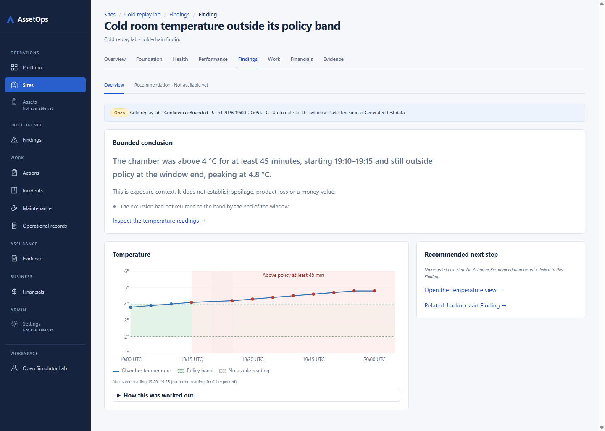
Mock
link-check · l06 · 390x900
http://127.0.0.1:5180/sites/COLD-LAB-001/findings/00000005-0000-4000-8000-00000000016d?revision_id=00000005-0000-4000-8000-00000000016e · B10-11 link check
App
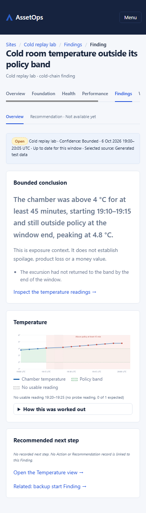
Mock
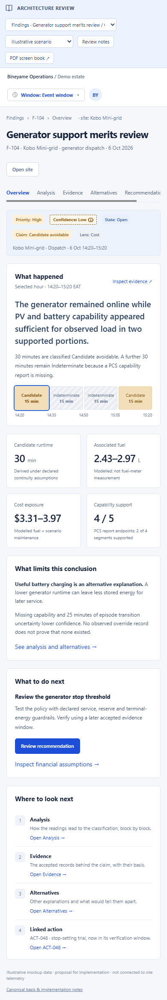
link-check · l07 · 1440x1000
http://127.0.0.1:5180/sites/EV-LAB-001/findings/00000005-0000-4000-8000-0000000003ce?revision_id=00000005-0000-4000-8000-0000000003cf · B10-11 link check
App
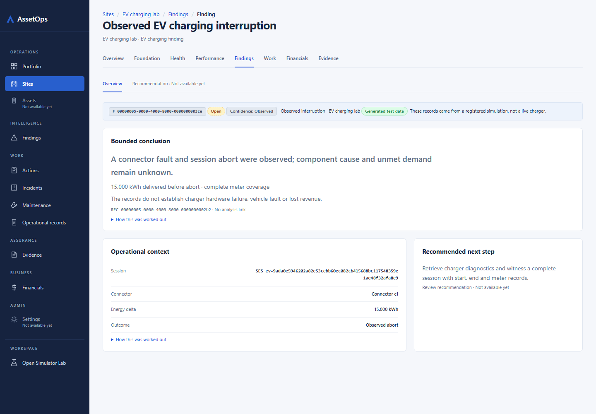
Mock
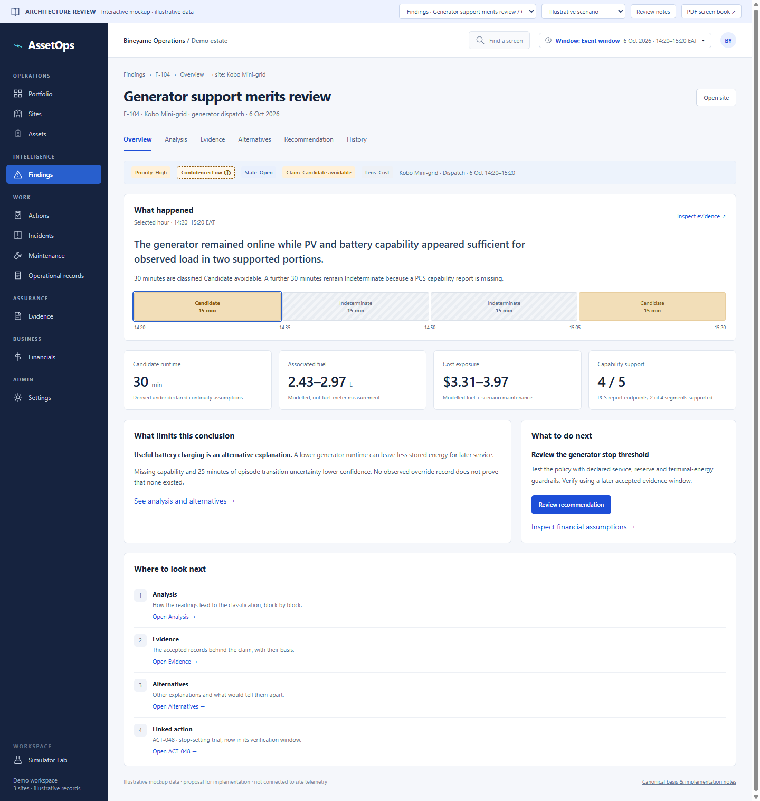
link-check · l07 · 390x900
http://127.0.0.1:5180/sites/EV-LAB-001/findings/00000005-0000-4000-8000-0000000003ce?revision_id=00000005-0000-4000-8000-0000000003cf · B10-11 link check
App
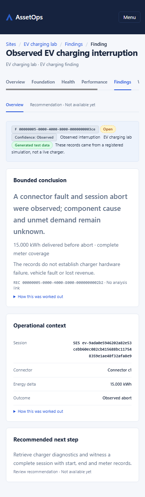
Mock
link-check · l08 · 1440x1000
http://127.0.0.1:5180/sites/COLD-LAB-001/findings · B10-11 link check
AppMock
link-check · l08 · 390x900
http://127.0.0.1:5180/sites/COLD-LAB-001/findings · B10-11 link check
App
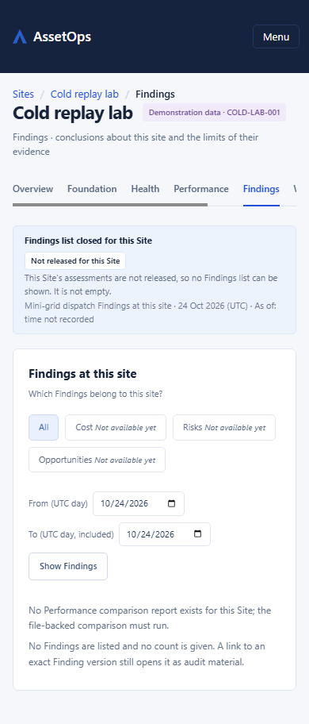
Mock
link-check · l09 · 1440x1000
http://127.0.0.1:5180/sites/EV-LAB-001/findings · B10-11 link check
App
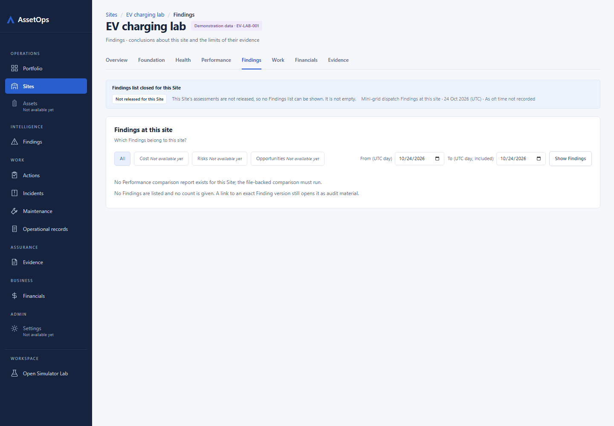
Mock
link-check · l09 · 390x900
http://127.0.0.1:5180/sites/EV-LAB-001/findings · B10-11 link check